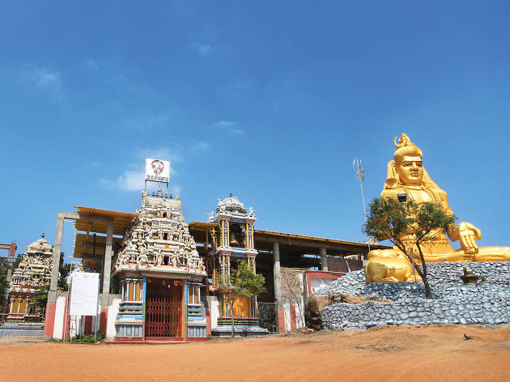

Sri Thirukoneshwaram Kovil
Koneswaram temple of Trincomalee is a classical-medieval Hindu temple complex in Trincomalee, a Hindu religious pilgrimage centre in Eastern Province, Sri Lanka. Most people visit this place not only because of the religious value of this place but also to enjoy the place and the environment, view.